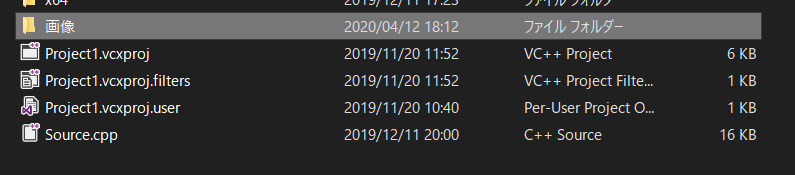

今回は画像をロードして表示するプログラムを作ります。
Dxライブラリでは画像をロードする関数・表示する関数がそれぞれ用意されています。
画像の拡張子はBMP,JPEG,PNG,DDS,ARGB,TGAの6種類に対応しています。
画像をロードするにはこの関数を使います。
int LoadGraph( char *FileName );| 引数 | char *FileName | ロードする画像のパス(文字列) |
| 返り値 | int型 | 画像をDxライブラリ内で扱うためのID |
| -1 : 画像が読み込めなかった |
画像を表示するにはこの関数を使います。
int DrawGraph( int x, int y, int GrHandle, int TransFlag ) ;| 引数 | int x, int y | 画像を表示させる座標 |
| int GrHandle | 表示する画像のID | |
| int TransFlag | 画像の透明な部分を考慮するか(PNGなど) | |
| 返り値 | int型 | 0 : 成功 |
| -1 : エラー発生(返り値は基本使わないので無視してOK) |
これらの関数を使って実際に画像を表示させてみましょう。
画像はソースコードと同じ場所にフォルダを作り、その中に表示させたい画像を入れましょう。(もし表示されない場合、画像フォルダを別のところに置いておく必要があるかもしれません。)

#include "DxLib.h"
int WINAPI WinMain(HINSTANCE,HINSTANCE,LPSTR,int){
ChangeWindowMode( TRUE ); // ウィンドウモードに設定
DxLib_Init(); // DXライブラリ初期化処理
int Handle= LoadGraph( "画像/キャラクタ00.png" ); // 画像をロードしてIDを保存する
DrawGraph( 50, 100, Handle, TRUE ); // データハンドルを使って画像を描画
WaitKey(); // キー入力があるまで待機
DxLib_End(); // DXライブラリ終了処理
return 0;
}